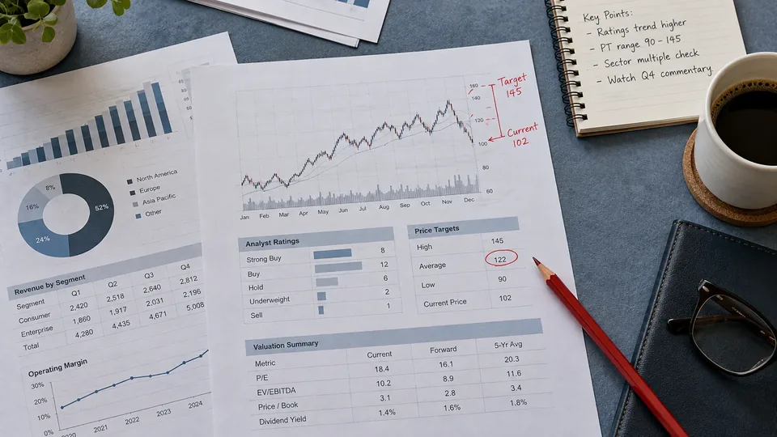

An Analyst Target Is a Valuation Case, Not a Price Promise
Ratings depend on assumptions, benchmarks and investment horizons. The reasoning behind a target matters more than its apparent precision.

An analyst's price target is an estimate produced from a valuation case. It is not a promise that the market will reach that price, or a complete investment recommendation without the assumptions behind it. The useful information lies in the expected business performance, the valuation method and the circumstances that would invalidate the case.
Rating labels also need definitions. The SEC's investor guidance notes that terms such as buy, hold and outperform can mean different things at different firms. A relative recommendation may concern performance against an industry benchmark rather than an absolute gain. Reading only the label can therefore produce a different interpretation from the one the research report actually describes.
The arithmetic is precise; the assumptions are estimates
Consider a hypothetical analyst expecting a company to earn $5 per share next year and assigning those earnings a multiple of 20. That produces a $100 target. Another analyst forecasts $4.50 and uses a multiple of 18, producing $81. Both calculations are straightforward. The disagreement concerns the business outlook and the price investors may pay for the resulting earnings, rather than a dispute about multiplication.
Now hold the first analyst's earnings forecast at $5 but reduce the assumed multiple from 20 to 16. The target falls from $100 to $80 without a change in forecast earnings. Alternatively, earnings could fall to $4 while the multiple remains at 20, producing the same $80. A target revision becomes more informative when the report separates changes in operating expectations from changes in valuation.
Match the target to its horizon and return definition
Suppose a fictional share trades at $80 and a report sets a $100 target over twelve months. The implied price gain is 25%, before costs and taxes. If the report also assumes a $2 dividend, the simple prospective total return becomes 27.5%, assuming the target is reached and the dividend is received. The additional cash should not be counted twice if the stated recommendation already uses total return.
The starting price also matters. If the share reaches $95 before a reader sees the report, the remaining price gain to the unchanged $100 target is approximately 5.26%. Repeating the original 25% figure would misstate the opportunity at the new price. A useful account provides the target date, reference price and forecast horizon so that readers can distinguish the original calculation from today's comparison.
An average target can hide a wide disagreement
Imagine five hypothetical targets of $60, $70, $100, $130 and $140. Their average is $100, but none of that arithmetic establishes a narrow consensus about value. The highest target is more than twice the lowest. The distribution reveals uncertainty that disappears when the average is presented without its range or the ages of the underlying reports.
The set of contributors can change too. An average might move because a new analyst begins coverage, even when existing analysts leave their forecasts unchanged. Reports may also use different financial periods or adjustment conventions. Before describing a higher average as broad optimism, check whether the comparison uses the same contributors, comparable horizons and a consistent earnings basis.
Scenario analysis makes uncertainty visible
A valuation can be tested under weaker sales, lower margins or a different discount rate. For an illustrative business, a base case might produce a $100 estimate, a weaker case $70 and a stronger case $120. These are scenarios, not a statistical confidence interval unless a model establishes one. The distance between them shows how much the conclusion depends on assumptions worth investigating.
A target is particularly fragile when several favorable developments must occur together. Strong revenue growth, margin expansion and a higher valuation multiple can each be plausible individually while making an ambitious combined case. The explanation of earnings results and market expectations shows why even an apparently good quarter may leave that case under pressure. The result has to be compared with what was already assumed.
Read disclosures alongside the model
Research firms can have commercial relationships or ownership interests relevant to their coverage. SEC guidance explains why readers should examine conflict disclosures without assuming that a disclosed relationship automatically makes the analysis wrong. Current FINRA research rules address disclosures and the basis for ratings and targets. The factual model and the potential incentives deserve separate scrutiny.
For a useful assessment, identify the valuation method, forecast period, key assumptions, risk scenarios and rating definition. Then compare the report with the company's filings and other evidence. A target can organize a well-supported argument about value, but its apparent precision does not make the future certain. The research is most useful when the reader can explain what must happen for the estimate to hold.
Sources and methodology (2)
Primary references support the definitions and reporting methods above. All examples explicitly labeled hypothetical or illustrative are TTN calculations, not current quotations or documented company transactions.
TTN analysis for informational purposes. This article is not investment, tax or legal advice.